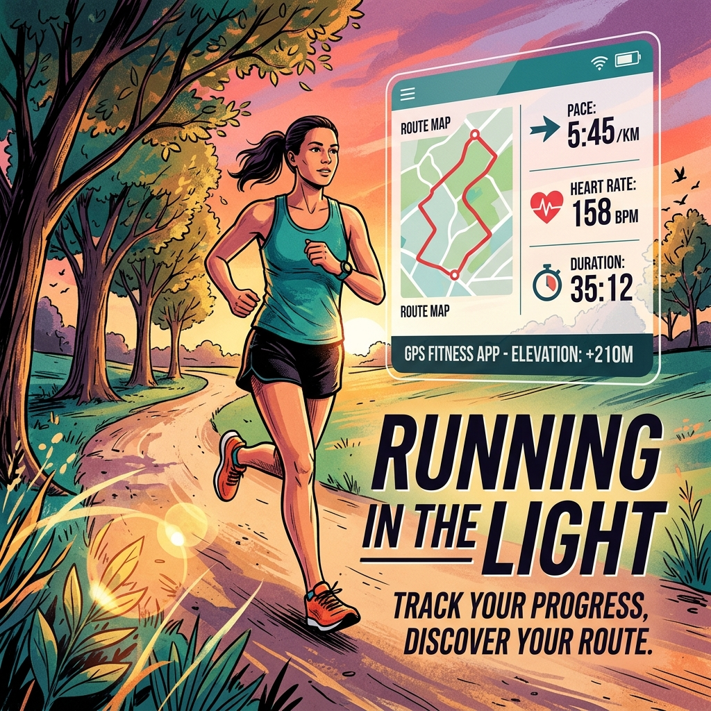

Executive Summary: The End of "Guesswork" Weight Loss
In 2026, the goal is not just "losing weight"—it is improving metabolic flexibility. Here is the data-backed blueprint to optimize your body composition.
1. The Metric That Matters: Glycemic Variability
Losing weight is fundamentally a process of insulin management. If your blood glucose is constantly spiking, your body is effectively locked in a "fat-storage" mode.
- The Technology: Continuous Glucose Monitors (CGM) like Dexcom G7.
- The Strategy: Use a CGM for 30 days to identify which specific foods cause your personal glucose spikes. You might find that "healthy" oatmeal spikes you more than eggs.
- The ROI: By keeping your glucose within a stable range (70–110 mg/dL), you maintain lower insulin levels, allowing your body to access stored adipose tissue (fat) for fuel.
2. The 80/20 Protocol: Muscle-Centric Fat Loss
Standard weight loss programs often lead to muscle wasting, which lowers your Basal Metabolic Rate (BMR) and causes the dreaded "metabolic adaptation" (where you stop losing weight even while eating very little).
The Strategy: Focus on Muscle Retention
- Protein Ceiling: Aim for 1.6g to 2g of protein per kilogram of body weight. Protein has a high Thermic Effect of Food (TEF), meaning your body burns significant calories just by digesting it.
- Hypertrophy Training: Strength training 3x per week is not optional. It signals the body that your muscle mass is necessary, forcing the energy deficit to come primarily from stored fat rather than muscle tissue.
3. Circadian-Aligned Nutrition
When you eat is often as important as what you eat. Aligning your calorie intake with your body’s natural circadian rhythm improves insulin sensitivity.
- The Protocol: The 10-hour eating window (e.g., 10 AM to 8 PM).
- Why it works: Allowing a 14-hour fasting window overnight increases mitochondrial efficiency and gives your gut microbiome time to repair.
- The Adherence Factor: This is not a "diet" but a timing system, making it significantly easier to sustain for months rather than weeks.
4. The 2026 "Fat-Loss" Toolkit
High-traffic SEO articles solve problems by recommending vetted tools. Here are the categories that drive high-intent traffic:
| Tool Category | Why it’s essential | Recommendation |
|---|---|---|
| Biometric Wearables | Tracks NEAT (Non-Exercise Activity Thermogenesis) | Oura Ring / Whoop |
| Smart Scales | Tracks body fat % trends, not just total weight | Withings Body Comp |
| Meal Tracking | Ensures caloric awareness without obsessiveness | Cronometer |
| Hydration Tech | High-tech water bottles that track intake | HidrateSpark |
5. Overcoming the "Plateau": Advanced Strategies
Every metabolic system hits a wall. When weight loss stalls, do not drop calories further (this kills your BMR). Instead:

- Increase NEAT: Focus on steps. Aim for 8,000–10,000 steps daily. This is the most underrated tool for fat loss because it doesn't spike cortisol like intense cardio can.
- Strategic Refeeds: If you have been in a deficit for 8 weeks, incorporate a "maintenance calorie" week. This signals your thyroid and leptin levels that you are not in a starvation state.
Frequently Asked Questions (Weight Loss FAQ)
Can I lose weight without exercising?
Yes, weight loss is 80% nutrition (caloric deficit). However, without exercise, you will lose a significant percentage of muscle, which will lower your BMR and make regaining the weight almost inevitable.
Why does the scale go up sometimes while I'm losing fat?
Weight is not fat. Changes in water retention, inflammation, and glycogen storage cause daily fluctuations. Focus on the 7-day average rather than daily snapshots.
Are weight loss medications (GLP-1s) the future?
They are a powerful tool, but they should only be used under strict medical supervision and must be accompanied by lifestyle changes. Without protein and strength training, these medications often result in significant muscle loss.
About Guide Market
Guide Market delivers vetted business and health insights for the digital economy. Our team researches the intersection of technology and human performance to provide data-backed blueprints for a modern, high-output lifestyle.